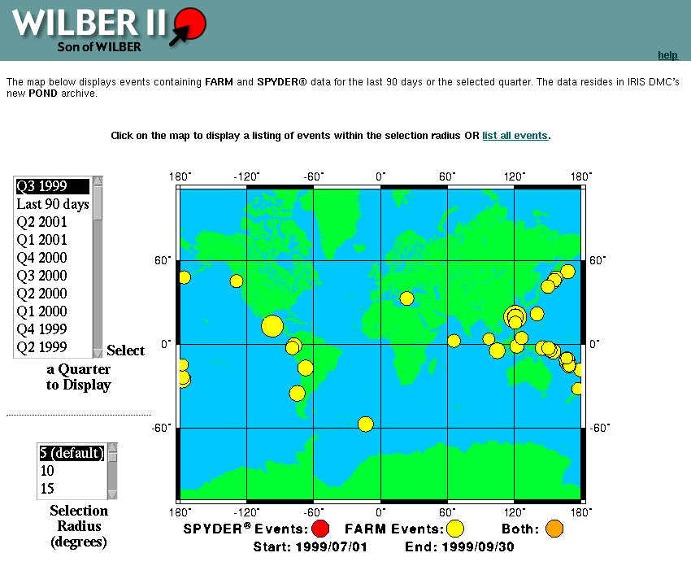

G515: Lesson 3
Accessing Data from IRIS DMC
Objective:
This lesson will teach you steps required to download data from the
IRIS Data Management Center through the interface they call "Wilber" and
convert the download file into a form you can work with using the Antelope
processing programs.
Follow these steps:
-
Go to the IRIS DMC
WEB SITE
-
On the left Frame labeled Quick Links there is a link with the lable
Wilber.
Follow that link
-
Follow the links on the right side of the page that comes up to use "Wilber
II, son of Wilber" (You may want to bookmark this page when it comes
up to avoid this path later)
-
Select a quarter (Q1, Q2, etc.) and a year. Newer data has "Spyder"
events, which means they were downloaded shortly after they occurred and
have not been quality controlled. If you look at data more than about
1 year old, the Spyder data are gone because they are superceded by "Farm"
events (higher quality) You will get a display something like this:
-
Point at a region of earthquakes with your mouse and left click with your
mouse. You will get a list of events within the specified "Selection
Radius". Experiment with the "Selection Radius" widget varying the
search radius and area you select to get the feel for this interface.
-
Select an event from the list by clicking on the date field
-
A list of network codes comes up that describes different groups of stations
run by different groups. Select II and IU under the IRIS GSN/GDSN
group and click Proceed
-
A lengthy form comes up. It would be a good idea to print this page
for later reference now.
-
Note that the form is divided into two parts: (1) station codes,
and (2) channel codes. You can use this to select from 1 to hundreds
of channels of recordings of the event you have selected. For now
choose ALL stations
and only the L channels
(fyi, the codes are this: B - broadband, L - long period, S-short
period, H - high frequency broadband, and E - triggered short period data.
Wilber normally has only B, L, and S channels. The second letter
is normally an H and the third letter in the code defines the orientation
of the sensor: Z=vertical, N=north-south, and E=east-west).
-
While you are here push the button labelled Map
of Responding Stations. Try to print this image (The way to do
this is browser and system dependent so the keyword is "try". It
would be useful to have this picture next week when we discuss the event
you chose.)
-
Fill in the Personal Information typein fields
in the lower right part of the page and check the Notify me by email
when complete field. Then push the Process Request button
(you are selecting the default data format which is called "SEED" for Standard
Earthquake Exchange Data).
-
A page comes up showing where you are in the queue
for getting the data you requested. You can sit and wait for it to
tell you it is finished, or wait until it send you email to tell you were
to find the data.
-
Grab the data from iris by anonymous ftp. You
can use command line ftp to ftp.iris.washington.edu or a web browser pointing
at ftp://www.iris.washington.edu/pub/userdata
You should find your data in a directory under the name you typed
as your Personal Information earlier. Be aware this file can
easily get pretty large and could exceed your file quota on nations.
You should probably place it in the /scratch area to prevent a quota violation
in the download process (I assume you all have done enough web work to
know how to do this.)
-
When the file is completely transferred run the program called psd2db.
First read the output from "man psd2db" to see the full usage of this command.
(Note I have seen psd2db fail on DMC generated SEED files. If something
goes wrong, try sd2db. The former is nicer to use because it does
not require making a second copy or the data. The later can generate
a large number of files that can be overwhelming.
-
Run dbpick on the output "database" and play with the data a bit.
Some things to experiment with are:
-
The data display can be too messy to see anything and be slow to display.
Use the sc command to limit the data you see. It can be useful to
use the page from the Wilber form you printed earlier to select stations
that might be of more interest.
-
Use the oe, ae, and sp commands to bring up theoretical phase picks.
-
Try selecting one component (e.g. sc *:BHZ) in combination with the "rec"
command. This brings up a display of the events in distance order.
Print what you get from this.
-
Try the "pal on" command. This aligns the data on the theoretical
P wave arrival time (ae has to be successful for this to work at all).
Zoom into the P wave and print what you get (use BHZ channels for this,
why?)
-
Bring the hard copies with you next week for discussion by the class.